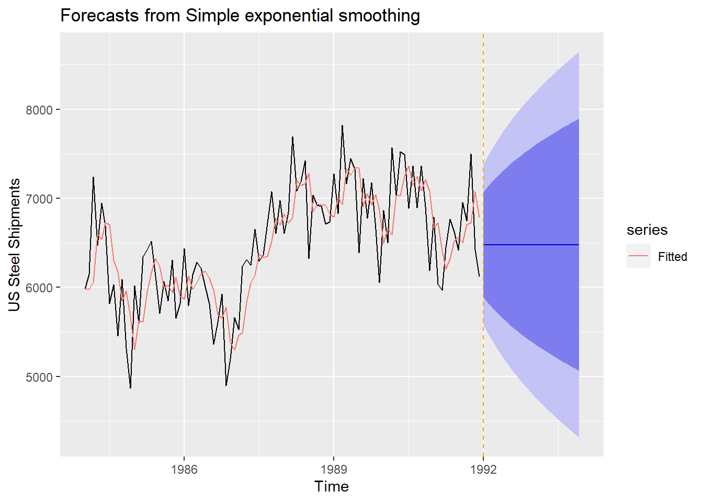
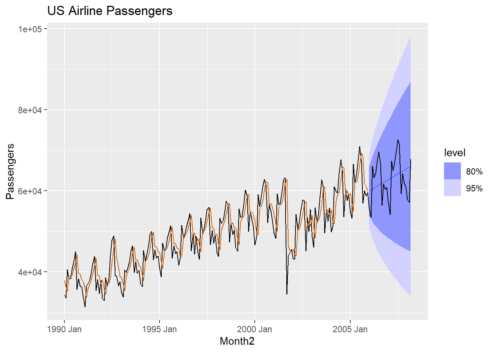
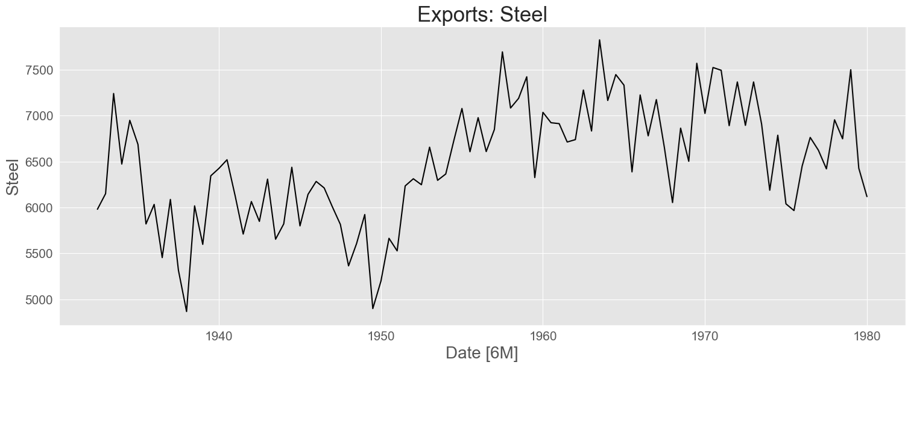
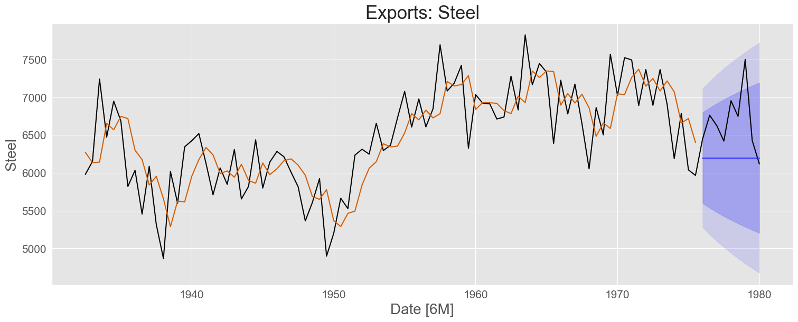

Chapter 3 Exponential Smoothing
We will now get into our first modeling, which are exponential smoothing models. They have been around for quite some time, but can still be useful if interested in one-step ahead forecasting.
## Warning: package 'fpp3' was built under R version 4.6.1## Warning: package 'tsibble' was built under R version 4.6.1## Warning: package 'tsibbledata' was built under R version 4.6.1## Warning: package 'ggtime' was built under R version 4.6.1## Warning: package 'feasts' was built under R version 4.6.1## Warning: package 'fabletools' was built under R version 4.6.1## Warning: package 'fable' was built under R version 4.6.1## Warning: package 'expsmooth' was built under R version 4.6.1## Warning: package 'seasonal' was built under R version 4.6.1## Warning: package 'seasonalview' was built under R version 4.6.1## Warning: package 'aTSA' was built under R version 4.6.1In R, we are able to do Simple (or Single) Exponential Smoothing Models, Holt Exponential Smoothing Models and Holt-Winters Exponential Smoothing Models. We will be using the Steel data set and the airline data set to illustrate these models. Each of these are shown below.
3.1 Simple Exponential Smoothing
For Simple Exponential Smoothing Models (SES), we have only one component, referred to as the level component. \[\hat{Y}_{t+1}= L_{t}\\ L_{t} = \alpha Y_{t} + (1-\alpha)L_{t-1}\]
This is basically a weighted average with the last observation and the last predicted value. Since this only has a level component, forecasts from SES models will be a horizontal line (hence why this method is called “one-step ahead” forecasting).
Before modeling, be sure to divide your data into a training, validation and test (or at least training and test). The below code illustrates the Simple (Single) Exponential Smoothing Model.
# Building a Single Exponential Smoothing (SES) Model - Steel Data #
Steel <- Steel |> mutate(date = seq(ymd('1932-07-01'),ymd('1980-01-01'),by='6 months'))
steel_ts<-Steel |> mutate(Month=yearmonth(date)) |> as_tsibble(index=Month)
steel_train <-steel_ts |> filter(year(date) <= 1975)
SES.Steel <- steel_train |>
model(ETS(steelshp ~ error("A") + trend("N") + season("N")))
Steel.for <- SES.Steel |>
fabletools::forecast(h = 9)
report(SES.Steel)## Series: steelshp
## Model: ETS(A,N,N)
## Smoothing parameters:
## alpha = 0.466543
##
## Initial states:
## l[0]
## 6269.498
##
## sigma^2: 214894.3
##
## AIC AICc BIC
## 1460.688 1460.977 1468.086# Plot the SES model on steel data
Steel.for |>
autoplot(steel_ts) +
geom_line(aes(y = .fitted), col="#D55E00",
data = augment(SES.Steel)) +
labs(y="Steel Exports", title="Steel Exports") +
guides(colour = "none")
# To get fitted values for training data set:
Steel_fitted <-fitted(SES.Steel)$.fitted
# To get fitted values for test data set:
Steel_test <- Steel.for$.mean
# Computes accuracy statistics for SES model on steel data (test data)
fabletools::accuracy(Steel.for, steel_ts)## # A tibble: 1 × 10
## .model .type ME RMSE MAE MPE MAPE MASE RMSSE ACF1
## <chr> <chr> <dbl> <dbl> <dbl> <dbl> <dbl> <dbl> <dbl> <dbl>
## 1 "ETS(steelshp ~ error… Test 468. 599. 486. 6.75 7.04 1.17 1.13 -0.05003.2 Holt ESM
The Holt model incorporates trend information. So, now there are two components: level and trend. For each component, there will be a smoothing coefficient (or weight). CAREFUL, when you look at parameter estimates, these are NOT the estimates for the mean nor the linear trend…you should be thinking of them as weights (between 0 and 1). The overall form for Holt’s method is:
\[\hat{Y}_{t+h}= L_{t}+hT_{t}\\ L_{t} = \alpha Y_{t} + (1-\alpha)(L_{t-1}+T_{t-1})\\ T_{t} = \beta (L_{t}-L_{t-1}) + (1-\beta) T_{t-1}\]
For the Holt’s method, when you forecast, you will see a trending line.
# Building a Linear Exponential Smoothing Model - US Airlines Data #
USAirlines_ts <- USAirlines |> mutate(date=myd(paste(Month, Year, "1"))) |> mutate(Month2=yearmonth(date)) |> as_tsibble(index=Month2)
air_train <-USAirlines_ts |> filter(year(date) <= 2005)
LES.air <- air_train |>
model(ETS(Passengers ~ error("A") + trend("A") + season("N")))
air.for <- LES.air |>
fabletools::forecast(h = 27)
report(LES.air)## Series: Passengers
## Model: ETS(A,A,N)
## Smoothing parameters:
## alpha = 0.5860139
## beta = 0.003740218
##
## Initial states:
## l[0] b[0]
## 37303.09 526.6595
##
## sigma^2: 23188824
##
## AIC AICc BIC
## 4271.560 4271.882 4287.847# Plot the data
air.for |>
autoplot(USAirlines_ts) +
geom_line(aes(y = .fitted), col="#D55E00",
data = augment(LES.air)) +
labs(y="Passengers", title="US Airline Passengers") +
guides(colour = "none")
We can also perform Holt’s method with a damped trend. You will see the formula for the damped trend is similar to the previous Holt formula with an addition of a dampening parameter.
\[\hat{Y}_{t+h}= L_{t}+\sum_{i}^{k}\phi^{i}T_{t}\\ L_{t} = \alpha Y_{t} + (1-\alpha)(L_{t-1}+\phi T_{t-1})\\ T_{t} = \beta (L_{t}-L_{t-1}) + (1-\beta) \phi T_{t-1}\]
We will illustrate the damped trend on the Airline data set.
LdES.air <- air_train |>
model(ETS(Passengers ~ error("A") + trend("Ad") + season("N")))
air.for <- LdES.air |>
fabletools::forecast(h = 27)
report(LdES.air)## Series: Passengers
## Model: ETS(A,Ad,N)
## Smoothing parameters:
## alpha = 0.5705768
## beta = 0.0001003564
## phi = 0.8085131
##
## Initial states:
## l[0] b[0]
## 36885.52 526.5046
##
## sigma^2: 23007825
##
## AIC AICc BIC
## 4271.031 4271.485 4290.576# Plot the data
air.for |>
autoplot(USAirlines_ts) +
geom_line(aes(y = .fitted), col="#D55E00",
data = augment(LdES.air)) +
labs(y="Passengers", title="US Airline Passengers") +
guides(colour = "none")
3.3 Holt-Winters
The Holt-Winters (HW) model has three components to it (level, trend and seasonality). Seasonality is an interesting component to model since we can have an additive seasonal component or a multiplicative seasonal component. Both models are shown below:
Additive HW \[\hat{Y}_{t+h}= L_{t}+hT_{t} + S_{t-p+h}\\ L_{t} = \alpha (Y_{t} - S_{t-p}) + (1-\alpha)(L_{t-1}+T_{t-1})\\ T_{t} = \beta (L_{t}-L_{t-1}) + (1-\beta) T_{t-1}\\ S_{t} = \gamma (Y_{t}-L_{t-1}-T_{t-1}) + (1-\gamma) S_{t-p}\]
Multiplicative HW \[\hat{Y}_{t+h}= (L_{t}+hT_{t}) S_{t-p+h}\\ L_{t} = \alpha \frac{Y_{t}} {S_{t-p}} + (1-\alpha)(L_{t-1}+T_{t-1})\\ T_{t} = \beta (L_{t}-L_{t-1}) + (1-\beta) T_{t-1}\\ S_{t} = \gamma \frac{Y_{t}}{L_{t-1}+T_{t-1}} + (1-\gamma) S_{t-p}\]
Where p is the frequency of the seasonality (i.e. how many “seasons” there are within one year).
# Building a Holt-Winters ESM - US Airlines Data - Additive Seasonality
HWadd.air <- air_train |>
model(ETS(Passengers ~ error("A") + trend("A") + season("A")))
air.for <- HWadd.air |>
fabletools::forecast(h = 27)
report(HWadd.air)## Series: Passengers
## Model: ETS(A,A,A)
## Smoothing parameters:
## alpha = 0.5913618
## beta = 0.0001002723
## gamma = 0.0001000455
##
## Initial states:
## l[0] b[0] s[0] s[-1] s[-2] s[-3] s[-4] s[-5]
## 38409 159.5944 -1520.744 -2728.928 -117.3477 -4305.732 6420.735 6299.852
## s[-6] s[-7] s[-8] s[-9] s[-10] s[-11]
## 4002.381 1210.882 122.2352 2660.169 -6471.051 -5572.452
##
## sigma^2: 4099578
##
## AIC AICc BIC
## 3950.201 3953.718 4005.578# Plot the data
air.for |>
autoplot(USAirlines_ts) +
geom_line(aes(y = .fitted), col="#D55E00",
data = augment(HWadd.air)) +
labs(y="Passengers", title="US Airline Passengers") +
guides(colour = "none")
### Multiplicative model
HWmult.air <- air_train |>
model(ETS(Passengers ~ error("M") + trend("A") + season("M")))
air.for <- HWmult.air |>
fabletools::forecast(h = 27)
report(HWmult.air)## Series: Passengers
## Model: ETS(M,A,M)
## Smoothing parameters:
## alpha = 0.5132388
## beta = 0.006772624
## gamma = 0.0614166
##
## Initial states:
## l[0] b[0] s[0] s[-1] s[-2] s[-3] s[-4] s[-5]
## 38328.12 132.2916 0.9879613 0.9516784 1.015964 0.9248462 1.127338 1.111153
## s[-6] s[-7] s[-8] s[-9] s[-10] s[-11]
## 1.063682 1.012367 0.9931891 1.041972 0.8832477 0.8866022
##
## sigma^2: 0.0015
##
## AIC AICc BIC
## 3922.549 3926.066 3977.926# Plot the data
air.for |>
autoplot(USAirlines_ts) +
geom_line(aes(y = .fitted), col="#D55E00",
data = augment(HWmult.air)) +
labs(y="Passengers", title="US Airline Passengers") +
guides(colour = "none")
3.4 Comparing forecasts
This should be done on the validation data set (test data should ONLY be used ONCE…at the very end).
air_fit <- air_train |>
model(
SES = ETS(Passengers ~ error("A") + trend("N") + season("N")),
`Linear` = ETS(Passengers ~ error("A") + trend("A") + season("N")),
`Damped Linear` = ETS(Passengers ~ error("A") + trend("Ad") + season("N")),
HWAdd = ETS(Passengers ~ error("A") + trend("A") + season("A")),
HWMult = ETS(Passengers ~ error("M") + trend("A") + season("M"))
)
air_fc <- air_fit |>
fabletools::forecast(h = 27)
fabletools::accuracy(air_fc, USAirlines_ts)## # A tibble: 5 × 10
## .model .type ME RMSE MAE MPE MAPE MASE RMSSE ACF1
## <chr> <chr> <dbl> <dbl> <dbl> <dbl> <dbl> <dbl> <dbl> <dbl>
## 1 Damped Linear Test 3351. 6251. 5238. 4.65 8.06 1.84 1.69 0.382
## 2 HWAdd Test -175. 1462. 1259. -0.421 2.02 0.443 0.395 0.448
## 3 HWMult Test 467. 1319. 1110. 0.705 1.75 0.391 0.356 0.219
## 4 Linear Test -67.3 5345. 4736. -0.789 7.62 1.67 1.44 0.436
## 5 SES Test 3346. 6248. 5236. 4.64 8.05 1.84 1.69 0.382Based upone this information, which model would you choose?
3.5 ETS
You can also allow the computer to search for the best model. The ETS (Error, Trend, Seasonality) algorithm will search for the best model and estimate the parameters. For the error term, we can have either an additive or multiplicative error structure. For the trend, we can have none, additive, or damped additive . For the seasonal component, we can have none, additive or multiplicative (lots of choices!). An example of how to run this is:
## Series: Passengers
## Model: ETS(M,Ad,M)
## Smoothing parameters:
## alpha = 0.6388447
## beta = 0.0001026043
## gamma = 0.0001060611
## phi = 0.979993
##
## Initial states:
## l[0] b[0] s[0] s[-1] s[-2] s[-3] s[-4] s[-5]
## 38326.08 97.13345 0.9672127 0.9438917 0.9983376 0.9209977 1.132478 1.132414
## s[-6] s[-7] s[-8] s[-9] s[-10] s[-11]
## 1.079442 1.022098 1.000804 1.051137 0.8657376 0.8854499
##
## sigma^2: 0.0014
##
## AIC AICc BIC
## 3910.149 3914.103 3968.784# Now compare this to the HW models:
air_fit <- air_train |>
model(
HWAdd = ETS(Passengers ~ error("A") + trend("A") + season("A")),
HWMult = ETS(Passengers ~ error("M") + trend("A") + season("M")),
AutoETS = ETS(Passengers ~ error("M") + trend("Ad") + season("M"))
)
air_fc <- air_fit |>
fabletools::forecast(h = 27)
fabletools::accuracy(air_fc, USAirlines_ts)## # A tibble: 3 × 10
## .model .type ME RMSE MAE MPE MAPE MASE RMSSE ACF1
## <chr> <chr> <dbl> <dbl> <dbl> <dbl> <dbl> <dbl> <dbl> <dbl>
## 1 AutoETS Test 1734. 2343. 2020. 2.75 3.19 0.711 0.633 0.596
## 2 HWAdd Test -175. 1462. 1259. -0.421 2.02 0.443 0.395 0.448
## 3 HWMult Test 467. 1319. 1110. 0.705 1.75 0.391 0.356 0.219## Series: Passengers
## Model: ETS(M,N,M)
## Smoothing parameters:
## alpha = 0.7358545
## gamma = 0.001388497
##
## Initial states:
## l[0] s[0] s[-1] s[-2] s[-3] s[-4] s[-5] s[-6]
## 41491.07 0.9705455 0.9480705 0.9988812 0.9158342 1.119004 1.126052 1.073332
## s[-7] s[-8] s[-9] s[-10] s[-11]
## 1.022722 1.003232 1.057297 0.8713743 0.8936557
##
## sigma^2: 0.0015
##
## AIC AICc BIC
## 3912.504 3915.231 3961.3663.6 Python Code for Exponential Smoothing
The following Python codes will produce exponential smoothing models. The exponential smoothing models are using an older version in statsmodels (a new format is in statsforecast).
import warnings
warnings.filterwarnings("ignore")
import os
os.environ["NIXTLA_ID_AS_COL"] = "true"
import numpy as np
np.set_printoptions(suppress=True)
np.random.seed(1)
import random
random.seed(1)
import pandas as pd
pd.set_option("max_colwidth", 100)
pd.set_option("display.precision", 3)
from utilsforecast.plotting import plot_series as plot_series_utils
import seaborn as sns
sns.set_style("whitegrid")
import matplotlib.pyplot as plt
plt.style.use("ggplot")
plt.rcParams.update({
"figure.figsize": (8, 5),
"figure.dpi": 100,
"savefig.dpi": 300,
"figure.constrained_layout.use": True,
"axes.titlesize": 12,
"axes.labelsize": 10,
"xtick.labelsize": 9,
"ytick.labelsize": 9,
"legend.fontsize": 9,
"legend.title_fontsize": 10,
"grid.alpha": 1.0,
})
import matplotlib as mpl
from cycler import cycler
mpl.rcParams['axes.prop_cycle'] = cycler(color=["#000000", "#000000"])
from fpppy.utils import plot_series
mpl.colormaps.register(
mpl.colors.ListedColormap(
["#000000", "#2f2fff"], name="black_and_blue"),
force=True,
)
mpl.colormaps.register(
mpl.colors.ListedColormap(
["#000000", "#D55E00"], name="black_and_orange"),
force=True,
)
mpl.colormaps.register(
mpl.colors.ListedColormap(
["#000000", "#000000"], name="black"),
force=True,
)
mpl.colormaps.register(
mpl.colors.ListedColormap(
["#000000", "#0072B2", "#D55E00"],
name='black_and_2color',
),
force=True
)
mpl.colormaps.register(
mpl.colors.ListedColormap(
["#000000", "#D55E00", "#0072B2", "#009E73"],
name='black_and_3color',
),
force=True
)
mpl.colormaps.register(
mpl.colors.ListedColormap(
["#000000", "#D55E00", "#0072B2", "#009E73", "#CC79A7"],
name='black_and_4color',
),
force=True
)
mpl.colormaps.register(
mpl.colors.ListedColormap(
["#D55E00", "#0072B2", "#009E73", "#CC79A7"],
name='r_colors',
),
force=True
)
from IPython.display import display, Markdown, Image
from statsforecast import StatsForecast
from statsforecast.models import AutoETS
from utilsforecast.evaluation import evaluate
from utilsforecast.losses import rmse, mae, mape, mase
steel=pd.read_csv("Q:\\My Drive\\Fall 2017 - Time Series\\DataR\\steel.csv")
ds = pd.date_range(start="1932-07-01", periods=len(steel), freq="6MS")
steel_df = pd.DataFrame({"unique_id": "steel", "ds": ds,
"y": steel["steelshp"].values})
steel_train=steel_df.head(87)
steel_test = steel_df.tail(9)
plot_series(steel_df,
xlabel="Date [6M]", ylabel="Steel", title="Exports: Steel")
steel_SES = StatsForecast(freq="6MS",
models=[AutoETS(model="ANN", alias="SES")])
steel_model = steel_SES.forecast(df=steel_train, h=9, level=[80, 95], fitted=True)
steel_model['ds'] = steel_test['ds'].values
steel_model.head()## unique_id ds SES SES-lo-95 SES-lo-80 SES-hi-80 SES-hi-95
## 0 steel 1976-01-01 6198.018 5278.562 5596.817 6799.217 7117.473
## 1 steel 1976-07-01 6198.018 5183.342 5534.557 6861.478 7212.692
## 2 steel 1977-01-01 6198.018 5096.322 5477.658 6918.377 7299.712
## 3 steel 1977-07-01 6198.018 5015.690 5424.935 6971.100 7380.345
## 4 steel 1978-01-01 6198.018 4940.216 5375.585 7020.450 7455.819## unique_id ds y ... SES-lo-80 SES-hi-80 SES-hi-95
## 0 steel 1932-07-01 5980.0 ... 5673.359 6868.580 7184.936
## 1 steel 1933-01-01 6150.0 ... 5537.552 6732.773 7049.129
## 2 steel 1933-07-01 7240.0 ... 5544.477 6739.698 7056.054
## 3 steel 1934-01-01 6472.0 ... 6056.916 7252.137 7568.493
## 4 steel 1934-07-01 6948.0 ... 5971.724 7166.945 7483.301
##
## [5 rows x 8 columns]## StatsForecast(models=[SES])# Save model fit(s) and return forecasts
steel_model = steel_SES.fit_predict(df=steel_train, h=9, level=[80, 95])
params = steel_SES.fitted_[0, 0].model_["fit"].x
alpha, level_0 = np.round(params, 4)
print("Optimal parameters:")## Optimal parameters:## alpha: 0.4667## Initial level: 6270.9696Plotting forecast:
fig = plot_series(steel_df, steel_model, level=[80, 95],
xlabel="Date [6M]", ylabel="Steel", title="Exports: Steel",
palette="black_and_blue")
fig.axes[0].plot("ds", "SES", data=fitted_vals, color="#D55E00")
fig
df = steel_test.assign(
forecast=steel_model["SES"].to_numpy(),
resid=lambda x: x["y"] - x["forecast"]
)
df.head()## unique_id ds y forecast resid
## 87 steel 1976-01-01 6450 6198.018 251.982
## 88 steel 1976-07-01 6762 6198.018 563.982
## 89 steel 1977-01-01 6623 6198.018 424.982
## 90 steel 1977-07-01 6420 6198.018 221.982
## 91 steel 1978-01-01 6954 6198.018 755.982The Holt models in Python:
#### This code uses the new Statsforecast package
### Holt Model
usair_p=pd.read_csv("Q:\\My Drive\\Fall 2017 - Time Series\\DataR\\usairlines.csv")
df=pd.date_range(start='1/1/1990', end='3/1/2008', freq='MS')
usair_p.index=pd.to_datetime(df)
d = {'unique_id': 1, 'ds': usair_p.index, 'y': usair_p['Passengers']}
usair_sf = pd.DataFrame(data = d)
### train has 192 observations
### test has 27 observations
air_train = usair_sf.head(192)
air_test = usair_sf.tail(27)
air_holt = StatsForecast(models = [AutoETS(model=["A","A","N"], alias="AutoETS", season_length=12)], freq = 'ME')
air_model = air_holt.fit(df = air_train)
result = air_holt.fitted_[0,0].model_['par']
result## array([ 0.56987172, 0.0001 , nan, nan,
## 34878.88658436, 129.33552531])y_hat1=air_model.predict(h=27)
yhat=y_hat1.reset_index(drop=True)
forecast=pd.Series(pd.date_range("2006-01-01", freq="ME", periods=27))
forecast=pd.DataFrame(forecast)
forecast.columns=["ds"]
forecast["hat"]=yhat['AutoETS']
forecast["unique_id"]="1"
sns.lineplot(air_train,x="ds", y="y", label="Train")
sns.lineplot(air_test, x="ds", y="y", label="Test")
sns.lineplot(forecast,x="ds", y="hat", label="Forecast",color="blue")
plt.show()
### Damped trend
air_holt = StatsForecast(models = [AutoETS(model=["A","A","N"], damped=True, alias="AutoETS", season_length=12)], freq = 'ME')
air_model = air_holt.fit(df = air_train)
result = air_holt.fitted_[0,0].model_['par']
result## array([ 0.57119978, 0.0001 , nan, 0.97999312,
## 34602.2279835 , 316.69914026])y_hat1=air_model.predict(h=27)
yhat=y_hat1.reset_index(drop=True)
forecast=pd.Series(pd.date_range("2006-01-01", freq="ME", periods=27))
forecast=pd.DataFrame(forecast)
forecast.columns=["ds"]
forecast["hat"]=yhat['AutoETS']
forecast["unique_id"]="1"
sns.lineplot(air_train,x="ds", y="y", label="Train")
sns.lineplot(air_test, x="ds", y="y", label="Test")
sns.lineplot(forecast,x="ds", y="hat", label="Forecast",color="blue")
plt.show()
Seasonal models in Python:
### Using Statsforecast
### Additive Seasonality
air_holtw = StatsForecast(models = [AutoETS(model=["A","A","A"], alias="AutoETS", season_length=12)], freq = 'ME')
air_model = air_holtw.fit(df = air_train)
result = air_holtw.fitted_[0,0].model_['par']
result## array([ 0.48122294, 0.01599161, 0.24248578, 0.89079283,
## 37701.95399986, 567.09483915, -999.24874583, -2530.68049955,
## 1175.86755931, -2770.23875782, 5795.29172057, 4085.71476597,
## 2448.5802639 , -189.48169355, -521.47674747, 1968.22430646,
## -4808.80071561, -3653.75145637])y_hat1=air_model.predict(h=27)
yhat=y_hat1.reset_index(drop=True)
forecast=pd.Series(pd.date_range("2006-01-01", freq="ME", periods=27))
forecast=pd.DataFrame(forecast)
forecast.columns=["ds"]
forecast["hat"]=yhat['AutoETS']
forecast["unique_id"]="1"
sns.lineplot(air_train,x="ds", y="y", label="Train")
sns.lineplot(air_test, x="ds", y="y", label="Test")
sns.lineplot(forecast,x="ds", y="hat", label="Forecast",color="blue")
plt.show()
### Multiplicative Seasonality
air_holtw = StatsForecast(models = [AutoETS(model=["M","A","M"], alias="AutoETS", season_length=12)], freq = 'ME')
air_model = air_holtw.fit(df = air_train)
result = air_holtw.fitted_[0,0].model_['par']
result## array([ 0.09455731, 0.0026422 , 0.02543917, nan,
## 37239.48557185, 157.54543238, 0.96930272, 0.94629204,
## 0.99673547, 0.92389636, 1.13023141, 1.12016781,
## 1.07916358, 1.02341081, 1.00200872, 1.0479834 ,
## 0.86983958, 0.89096811])y_hat1=air_model.predict(h=27)
yhat=y_hat1.reset_index(drop=True)
forecast=pd.Series(pd.date_range("2006-01-01", freq="ME", periods=27))
forecast=pd.DataFrame(forecast)
forecast.columns=["ds"]
forecast["hat"]=yhat['AutoETS']
forecast["unique_id"]="1"
sns.lineplot(air_train,x="ds", y="y", label="Train")
sns.lineplot(air_test, x="ds", y="y", label="Test")
sns.lineplot(forecast,x="ds", y="hat", label="Forecast",color="blue")
plt.show()
### AutoETS
air_holtw = StatsForecast(models = [AutoETS(model=["Z","Z","Z"], alias="AutoETS", season_length=12)], freq = 'ME')
air_model = air_holtw.fit(df = air_train)
result = air_holtw.fitted_[0,0].model_['par']
result## array([ 0.35392825, nan, 0.2913307 , nan,
## 38834.84067263, -830.63715327, -2793.66612347, 348.96054887,
## -1645.04368179, 6419.38336381, 5161.83883904, 2803.18982111,
## 124.54910375, -1049.62060536, 950.9060668 , -5573.70399219,
## -3916.1561873 ])y_hat1=air_model.predict(h=27)
yhat=y_hat1.reset_index(drop=True)
forecast=pd.Series(pd.date_range("2006-01-01", freq="ME", periods=27))
forecast=pd.DataFrame(forecast)
forecast.columns=["ds"]
forecast["hat"]=yhat['AutoETS']
forecast["unique_id"]="1"
sns.lineplot(air_train,x="ds", y="y", label="Train")
sns.lineplot(air_test, x="ds", y="y", label="Test")
sns.lineplot(forecast,x="ds", y="hat", label="Forecast",color="blue")
plt.show()
### Comparing models:
air_holtw = StatsForecast(models = [AutoETS(model=["A","A","A"], alias = "Additive", season_length=12),
AutoETS(model=["M","A","M"], alias = "Multiplicative", season_length=12)], freq = 'ME')
air_model = air_holtw.fit(df = air_train)
y_hat1=air_model.predict(h=27)
y_hat1## unique_id ds Additive Multiplicative
## 0 1 2005-12-31 55463.047 55276.297
## 1 1 2006-01-31 54885.387 54177.059
## 2 1 2006-02-28 65846.859 65606.875
## 3 1 2006-03-31 62177.195 62759.926
## 4 1 2006-04-30 63248.168 64265.078
## 5 1 2006-05-31 66142.430 67983.453
## 6 1 2006-06-30 68683.672 71003.070
## 7 1 2006-07-31 66152.406 71539.562
## 8 1 2006-08-31 54251.707 58415.742
## 9 1 2006-09-30 59907.391 63461.949
## 10 1 2006-10-31 58180.180 60389.762
## 11 1 2006-11-30 59900.918 62076.480
## 12 1 2006-12-31 55417.457 57164.699
## 13 1 2007-01-31 54844.781 56022.656
## 14 1 2007-02-28 65810.688 67835.508
## 15 1 2007-03-31 62144.973 64885.832
## 16 1 2007-04-30 63219.461 66435.844
## 17 1 2007-05-31 66116.859 70273.367
## 18 1 2007-06-30 68660.891 73388.008
## 19 1 2007-07-31 66132.117 73935.812
## 20 1 2007-08-31 54233.633 60366.957
## 21 1 2007-09-30 59891.289 65575.836
## 22 1 2007-10-31 58165.840 62395.746
## 23 1 2007-11-30 59888.145 64132.801
## 24 1 2007-12-31 55406.078 59053.102
## 25 1 2008-01-31 54834.641 57868.250
## 26 1 2008-02-29 65801.656 70064.148y_hat1=air_model.predict(h=27)
yhat=y_hat1.reset_index(drop=True)
forecast=pd.Series(pd.date_range("2006-01-01", freq="ME", periods=27))
forecast=pd.DataFrame(forecast)
forecast.columns=["ds"]
forecast["hat1"]=yhat['Additive']
forecast["hat2"]=yhat['Multiplicative']
forecast["unique_id"]="1"
sns.lineplot(air_train,x="ds", y="y", label="Train")
sns.lineplot(air_test, x="ds", y="y", label="Test")
sns.lineplot(forecast,x="ds", y="hat1", label="Additive",color="blue")
sns.lineplot(forecast,x="ds", y="hat2", label="Multiplicative",color="red")
plt.show()
3.7 SAS Code for Exponential Smoothing Models
The following code is for Exponential Smoothing models in SAS.
Create library for data sets
libname Time ‘Q:Drive - Time Series’;
run;
SIMPLE EXPONENTIAL SMOOTHING MODEL
Create a simple exponential smoothing model
proc esm data=Time.Steel print=all plot=all lead=24;
forecast steelshp / model=simple;
run;
Create a simple exponential smoothing model with ID statement
proc esm data=Time.USAirlines print=all plot=all lead=24; id date interval=month; forecast Passengers / model=simple; run;
LINEAR TREND FOR EXPONENTIAL SMOOTHING
Double exponential smoothing
proc esm data=Time.Steel print=all plot=all lead=24; forecast steelshp / model=double; run;
linear exponential smoothing
proc esm data=Time.Steel print=all plot=all lead=24; forecast steelshp / model=linear; run;
damped trend exponential smoothing
proc esm data=Time.Steel print=all plot=all lead=24; forecast steelshp / model=damptrend; run;
linear exponential smoothign with interval = month
proc esm data=Time.USAirlines print=all plot=all lead=24; id date interval=month; forecast Passengers / model=linear; run;
SEASONAL EXPONENTIAL SMOOTHING MODEL
Additive seasonal exponential smoothing model
proc esm data=Time.USAirlines print=all plot=all seasonality=12 lead=24 outfor=test1; forecast Passengers / model=addseasonal; run;
mulitplicative seasonal exponential smoothing model
proc esm data=Time.USAirlines print=all plot=all seasonality=12 lead=24; forecast Passengers / model=multseasonal; run;
Winters additive exponential smoothing model (includes trend)
proc esm data=Time.USAirlines print=all plot=all seasonality=12 lead=24; forecast Passengers / model=addwinters; run;
Winters multiplicative exponential smoothing model (includes trend) (Lead = 24)
proc esm data=Time.USAirlines print=all plot=all seasonality=12 lead=24; forecast Passengers / model=multwinters; run;
Winters multiplicative exponential smoothing model (includes trend) Lead = 12
proc esm data=Time.USAirlines print=all plot=all lead=12 back=12 seasonality=12; forecast Passengers / model=multwinters; run;
EXPLORATION of SEASONAL EXPONENTIAL SMOOTHING MODEL
Winters multiplicative exponential smoothing model (includes trend) Lead = 12, uses outfor statement to output forecasts
proc esm data=Time.USAirlines print=all plot=all
seasonality=12 lead=12 back=12 outfor=test;
forecast Passengers / model=multwinters;
run;
calculate |error|/|actual value|
data test2; set test; if TIMEID>207; abs_error=abs(error); abs_err_obs=abs_error/abs(actual); run;
mean of |error|/|actual value| for this forecast
proc means data=test2 mean; var abs_error abs_err_obs; run;